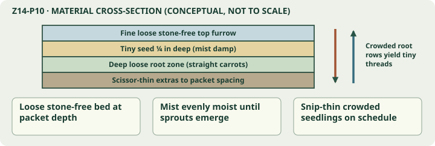

Z14-P10 · Food production and preservation · New manuscript
Direct-seed root crops, beans, and peas cleanly at proper depth and spacing
Achieve strong uniform germination and full-size roots without overcrowding or crusted-soil failure.
When it applies · Carrots, beets, parsnips, radishes, peas, beans, sweet corn, and cucurbits best seeded straight into garden beds.
Equipment · Seed packet depth/spacing guide, rake, watering rose/mist nozzle, and thinning scissors.

Actions
- Prepare a fine, loose, stone-free seedbed (especially critical for straight un-forked carrots and parsnips) and sow seeds strictly at packet depth—tiny seeds like carrots sit barely ¼ inch deep and fail if buried deeply or allowed to dry out during their 14–21 day germination window.[P01]
- Keep delicate newly seeded furrows evenly damp (not flooded) with gentle fine misting until seedlings emerge, protecting fragile sprouts from pounding rainstorms.[P03, P01]
- Thin crowded seedlings ruthlessly once true leaves appear (snipping extras at soil level with small scissors rather than yanking neighbors' roots) to exact packet spacing—overcrowded carrots and beets produce tangles of tiny unusable threads.[P01]
Failure recognition · Skipping thinning on a dense row of carrots and harvesting pencil-thin stunted roots in September.[P01]
Verify · Confirm proper seed depth, steady gentle germination moisture, and timely scissor thinning to exact packet spacing.[P01, P03]
Stop or change course · Crusty baked clay soil over tiny seeds requires gentle moisture or fine compost top-dressing rather than deep reseeding blindly.[P02, P01]
Evidence and editorial notes
- P01 · University of Minnesota Extension · Planting the Vegetable Garden (current web edition)
- Section: Site Selection, Sunlight, Frost Dates, and Short-Season Planning · Conditions: Home vegetable gardening in Upper Midwest / Minnesota (USDA Zones 3–5)
Support: Select a sunny well-drained garden site receiving 6–8+ hours of direct sunlight, match crop days-to-maturity to local last-spring and first-autumn frost dates, and separate cool-season crops from frost-sensitive warm-season crops.
Limitations: Microclimates, low frost pockets, and soil clay/sand composition shift local planting windows by weeks. · Conflicting evidence: None; anchors regional Minnesota growing-season realism.
Editorial note: Grounds Z14 regional food production and frost-window planning. · Specialist reviewer: Horticulture and university Extension specialist
Primary source · checked 2026-11-24 - P02 · University of Minnesota Extension · Planting the Vegetable Garden (current web edition)
- Section: Soil Preparation, Testing, Compost, and Safe Fertility · Conditions: Residential garden beds and small-acreage food plots
Support: Test garden soil through an accredited lab (e.g., UMN Soil Testing Lab) before heavy amending to determine pH, nutrients, and urban lead risk; incorporate finished compost and avoid applying raw animal manure immediately before harvesting edible crops.
Limitations: Urban soils near older painted buildings or roads may contain legacy lead requiring raised beds and clean soil barriers. · Conflicting evidence: None; links soil fertility to food-safety contamination prevention.
Editorial note: Separates safe composted soil building from pathogen/heavy-metal hazards. · Specialist reviewer: Soil science and Extension horticulture
Primary source · checked 2026-11-24 - P03 · University of Minnesota Extension · Planting the Vegetable Garden (current web edition)
- Section: Watering, Mulching, Crop Rotation, and Integrated Pest Management · Conditions: Home vegetable plots across seasonal dry/wet swings
Support: Water deeply at the soil base rather than overhead foliage to conserve moisture and curb fungal disease, mulch soil to stabilize temperature and weeds, rotate plant families across seasons, and identify pests before choosing least-toxic controls.
Limitations: Untreated rainwater or suspect surface water should not be splashed onto ready-to-eat leafy crops immediately before harvest. · Conflicting evidence: None; aligns with FSG-4 clean produce handling.
Editorial note: Grounds resilient low-input gardening and biological pest management. · Specialist reviewer: Extension horticulture and integrated pest management
Primary source · checked 2026-11-24
Source lineage · UMN Extension Planting the Vegetable Garden; new manuscript · Classification · New manuscript.